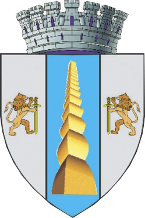

Târgu‐Jiu
The city takes its name from the river Jiu, which runs through it. In antiquity, there was a Dacian village in around the location of today's city surrounded by forests. After the Roman conquests of Oltenia (101‐102), military units were stationed around the roads that connected different important routes at the time. During the digging of the Târgu Jiu ‐ Rovinari railroad, mosaics, coins, ceramics and Roman bricks were found in the south-eastern part of the city. This and ancient testimonies support the idea that Târgu Jiu was a commercial town (a vicus) while under the Roman Empire's rule. A very important route that connects the Danube to Transylvania runs through the city, so historians believe that part of the Roman army under Trajan's leadership stayed and then passed in the actual location of the city.
The first written account of the city appears in a document dating from 23 November 1406 in an order signed by Mircea cel Batran. Since 1497, the city has been the seat of Gorj County.Constantin Brâncuşi, who had lived here as a boy, was commissioned to contribute to a memorial
monument to the fighters of World War I, called Calea Eroilor, "Heroes' Street", which was
finished in 1938. His large sculptures are now the main tourist attractions in Târgu Jiu: The Table of
Silence,
Stool Alley, The Gate of the Kiss, and The Endless Column. The latter is shown in the middle section of the
city's coat of arms.
In the 1950s the Communist mayor planned to demolish Brâncuşi's "bourgeois" art.
The plan was not carried out.
Coat of arms
The Coat of Arms of Târgu Jiu consists of a Shield with seven towers. In the centre of the Shield lies the representation of Constantin Brâncuşi's Endless Column, a symbol of Romanian art and culture. In the right and left sides of the shield lies a golden lion holding a black sword, "guarding" the Column. The Lion is the ancient symbol of Oltenia, thought to be originating from the logo of one Rome's Legions station in this aria, the 13th Legion "Gemina (Legio XIII Gemina)". It represents the bravery and combative spirit of the city's inhabitants.
